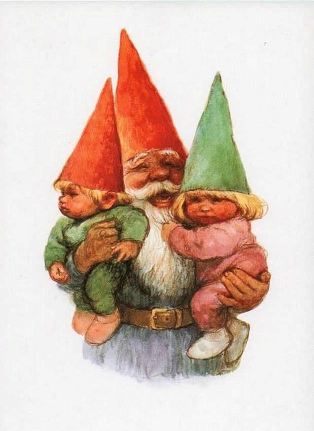

About Gnomes
Gnomes are mythical creatures known for their small stature and love of nature. They are often depicted as guardians of the earth and are associated with various folklore and legends.
A Happy Gnome with his Family.
Gnome Characteristics
- Small size
- Bearded appearance
- Pointed hats
- Affinity for nature
- Magical abilities